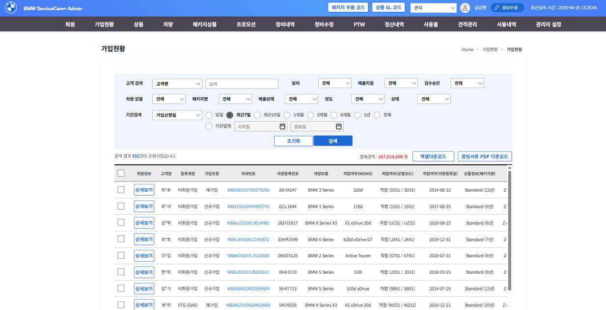
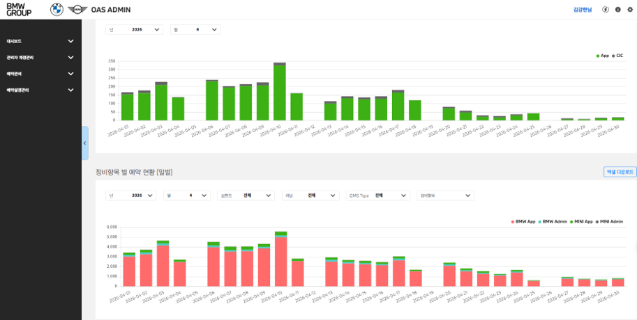

반복 업무 자동화 14종과 효과 산정 체계
문제
- 담당자가 매일, 매주, 매월 같은 작업을 손으로 반복. 가입 심사만 하루 200건을 본사 차량 데이터와 대조
- 어느 업무에 몇 시간이 들어가는지 조직 안에 숫자가 없어 무엇부터 고칠지 정하지 못하던 상태
접근
- 현업 옆에서 업무를 관찰하고 소요 시간을 직접 실측해 과제를 정의
- 반복성과 정책 명확성, 효과 크기, 지속 사용성 네 기준으로 선별. 못 넘기면 착수하지 않음
- 판단 기준이 정책으로 고정된 업무라 운영 단계에서는 LLM을 호출하지 않고 규칙으로 구현해 비용과 정확도를 함께 확보
실행
- Python과 VBA, Selenium으로 직접 구현하고 실제 운영 데이터로 검증
- 도구 1건에 약 15시간 투입 (업무 관찰 2시간, 정책을 규칙으로 정리 2~3시간, 코드 6시간, 현업 합의와 고도화 3시간, 테스트와 반영 1시간)
- 승인은 전부 자동, 반려만 사람이 최종 확인하는 구조로 설계해 책임 소재를 남김
14종 전건 운영 안착연 3,000시간약 5,700만 원ROI 약 1,320%판정 정확도 100%


신원에 옮긴다면 브랜드와 법인마다 손으로 만드는 주간, 월간 리포트부터 봅니다. 빈도와 소요 시간이 이미 고정돼 있어 효과를 2주 안에 숫자로 보일 수 있는 자리입니다.